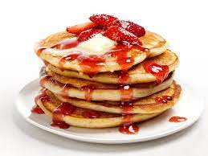

Cheesecake Pancakes

Description
Cheesecake pancakes topped with strawberries definitely take your breakfast game up a few notches.
Ingredients
- For the topping: fresh strawberries and strawberry jam (store-bought or homemade)
- For the cream cheese swirl: cream cheese, white sugar, milk, and vanilla extract
- For the pancake batter: All-purpose flour, baking powder, baking soda, salt, an egg, buttermilk, vegetable oil, cooking spray, and graham cracker crumbs and powdered sugar
Steps
- Make the strawberry topping.
- Make the cream cheese swirl.
- Make the pancake batter.
- pour portions of the batter onto the prepared skillet and cook until the edges are golden brown and the batter is bubbling on top.
- Pipe a swirl of the cream cheese mixture onto each pancake. Coat with cooking spray.
- Flip and cook until golden brown on both sides.
- Serve with strawberry topping and sprinkle with graham cracker crumbs.